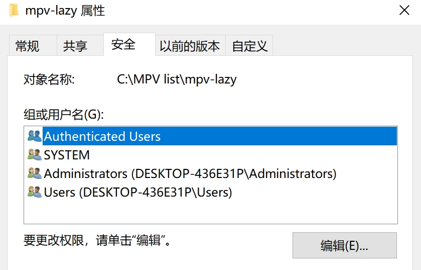
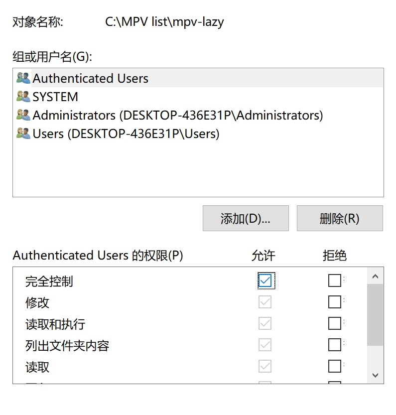
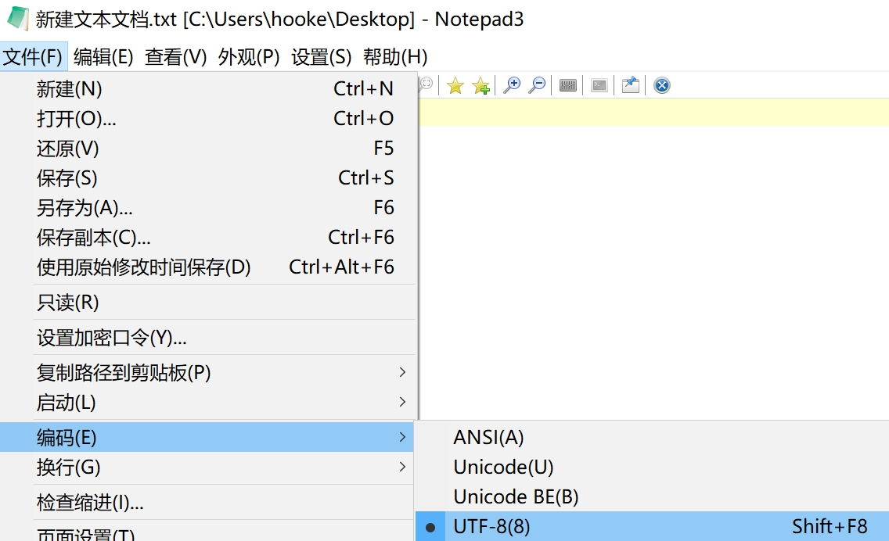
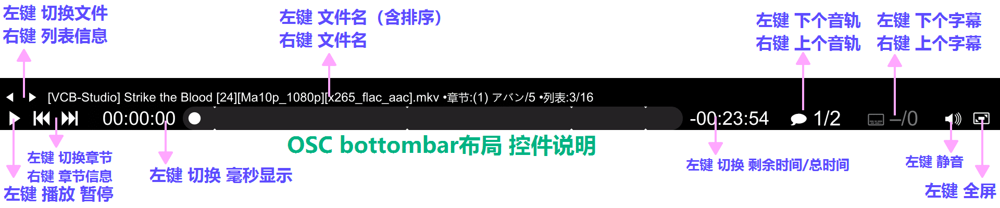
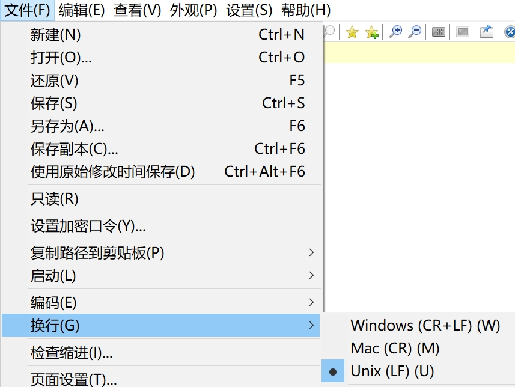
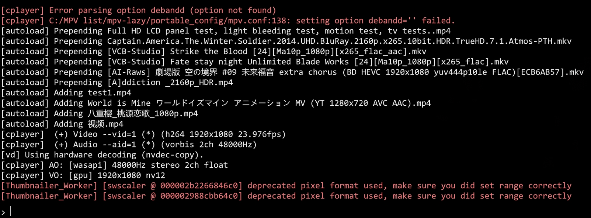
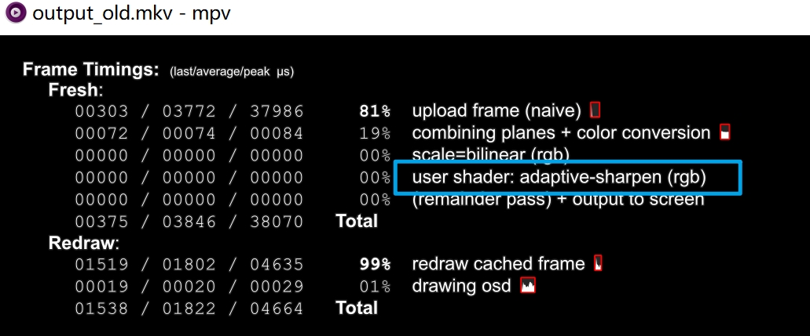
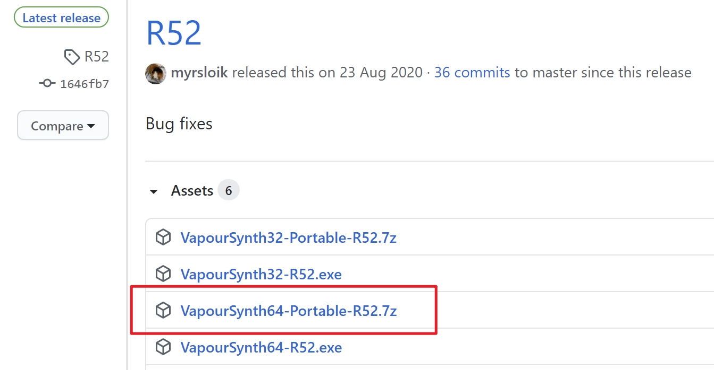
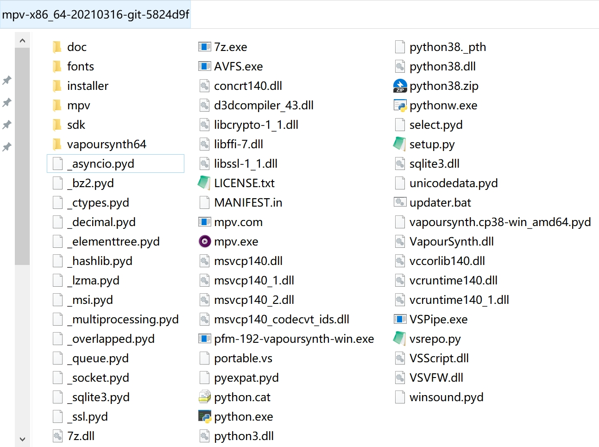
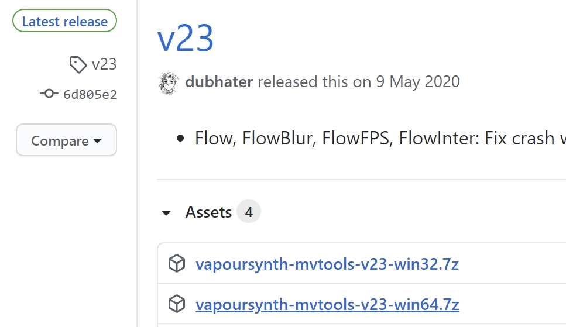

目录
序极短的介绍准备工作mpv 播放器的使用【入门】1.下载安装2.更改权限3.选项设置4.高频快捷键mpv 播放器的使用【进阶】1.主设置文件细化2.快捷键自定义2.1.运行时更改主设置3.脚本增强3.1内置脚本3.1.1.控制台3.1.2.数据统计3.1.3.条件配置3.2.外置脚本4.插入滤镜4.1.常规用法4.2.运行时启用5.第三方着色器5.1.常规用法5.2.运行时启用5.3.第三方着色器介绍6.VapourSyhth6.1.部署前置6.2.mvtools 补帧法6.2.1.库的下载6.2.2.脚本安置6.2.3.设置调用FAQ 常见问题解答
序
ver.20210323
极短的介绍
mpv是极简设计的高画质的开源播放器。 与传统的PC高画质方案Directshow+（mpc+lavfilter+madvr+xysubfilter）不同，mpv是一整套的解决方案（单播放器解码渲染字幕齐活）（VLC的既视感？？？）。用户的不同用法决定了这个方案可以十分省事，也可以非常折腾。
准备工作
本教程测试环境 win10-x64 I.cpu+N.gpu
推荐使用的高级文本编辑器，完全可替代系统自带的记事本 Notepad3
mpv 播放器的使用【入门】
既是入门，也是最省心的用法。
1.下载安装
mpv目前没有官方编译的版本，第三方shinchiro编译的算公认的半官方版，在此处获取64位最新版本： https://sourceforge.net/projects/mpv-player-windows/files/64bit/ 全部解压至自定义目录，点击运行 mpv.exe ，拖入任意视频播放以快速测试兼容性。
如果需要注册成可选的默认播放器，以管理员权限运行 installer 文件夹内的 mpv-install.bat ，此后不要更改 mpv.exe 所在文件夹的路径或名称，否则需要重新执行该文件重新注册到系统。
🔺 出于兼容考虑，安置的路径里不要存在中文，最好为纯英文数字 出于将来省事可能性的考虑（见下章【进阶】），mpv尽可能放在盘符根目录
2.更改权限
进入后方的步骤前，先确保 mpv.exe 所在路径具有被完全控制的权限。
（文件夹右键）属性 → 安全 → 编辑 → 选择需要被授权的用户 → ☑允许


3.选项设置
因为mpv本身不具有图形化前端，绝大多数的设置选项都是靠在主设置文件 mpv.conf 中输入参数实现的。
mpv的默认设置目录为 C:/Users/你的用户名/AppData/Roaming/mpv/
强烈建议你在 mpv.exe 的旁边新建一个 portable_config 的文件夹，该目录具有最高级的优先级，一旦存在此文件夹，其它所有的设置目录都会被忽略。
因此在 /portable_config/ 内新建一个 mpv.conf 的空文本，先确保文本编码为 UTF-8
即 X:/xxxxx/你的MPV文件夹/portable_config/mpv.conf

- 这两种设置目录的选择各有特点：以 C:/Users/你的用户名/AppData/Roaming/mpv/ 为设置目录，相当于这是“全局设置目录”，不管你使用电脑里存放的多少个不同版本的mpv，都会自动读取这个设置目录；以 X:/xxxxx/你的MPV文件夹/portable_config/ 为设置目录，除去其具有最高优先级（会让其忽略“全局设置”）的特性，还赋予了软件绿色化的特性（查看【进阶】章可知大部分文件都可放在设置目录），非常适合便携党。
在 mpv.conf 中输入以下必要参数：
xxxxxxxxxx121 hwdec=d3d11va # 使用硬解（原生模式）2 hwdec-codecs=all # 尽可能所有格式先尝试硬解3#log-file="~~desktop/mpv.log" # 输出log在桌面4 keep-open=yes # 播放完毕后不自动退出5 save-position-on-quit=yes # 退出时保存当前播放状态6 audio-file-auto=fuzzy # 自动加载同名外置音轨7#icc-profile-auto # 进行校色8 icc-cache-dir="~~/icc_cache" # 保存缓存加速启动9#profile=gpu-hq # 使用内置的预设的较高画质方案10 gpu-shader-cache-dir="~~/shaders_cache" # 保存缓存加速启动11 sub-auto=fuzzy # 自动加载同名外置字幕12 screenshot-directory="~~desktop/" # 截图输出在桌面进一步解释： 如何理解这样写的目的，某一行参数中如果有注释符号"#"，意味着该行"#"的位置以后的内容为无效。如果将这一行行参数看作一个个可以打勾的选项。则 "hwdec=d3d11va" 类似于 "☑hwdec=d3d11va" 激活该参数，反之 "#hwdec=d3d11va" 对应 "☒hwdec=d3d11va" 取消该选项。
部分被注释掉的参数： --log-file 用于输出日志查错，一般人用不到也看不懂 --icc-profile-auto 对于已经校色的用户应当开启，未校色的用户开启会产生色彩错误 --profile=gpu-hq 如果你的显卡不太差，可以使用这个内建的方案
🔺 由于主设置文件的书写规范最为宽松：
你可以在参数后直接注释中文解释 hwdec=d3d11va # 使用硬解（原生模式） ；
也可以加大量空格美化参数的排版 hwdec = d3d11va # 使用硬解（原生模式） ；
还可以用 --hwdec=d3d11va 这种替代写法表示激活的参数；
甚至其中 no-osd-bar 这类no-开头的参数可改成为 osd-bar=no；
以及官方手册中没有赋值的参数比如 deband 可以写成 deband=yes 且等效。
4.高频快捷键
上方必要参数输入完保存退出。再记住常用快捷键和界面控件作用：

1 2 调整对比度
3 4 调整亮度
5 6 调整伽玛
7 8 调整饱和度
9 0 调整音量
[ ] 调整播放速度
Backspace 重置播放速度
s 快速截屏
i 显示有关当前播放文件的统计信息
其它常用快捷键： https://mpv.io/manual/master/#interactive-control
入门教程到此结束。
mpv 播放器的使用【进阶】
开始本章前，默认已读完入门章。无尽折腾之路，由此开启。
1.主设置文件细化
最可靠的途径是直接看官方的最新手册： https://mpv.io/manual/master/ 为了降低难度和节省时间，我挑选了其中的一些参数并添加了中文注释： https://github.com/hooke007/MPV_lazy/blob/master/mpv.conf 根据自身需求，个性化平衡适配你的需求和硬件。
2.快捷键自定义
使用 input.conf 文件创建属于你自己的快捷键方案，该文件应和主设置文件 mpv.conf 位于同一级目录
查看官方的内建方案获得全部快捷键对应的功能： https://github.com/mpv-player/mpv/blob/master/etc/input.conf 同样我的懒人包版中文注释也能降低上手难度： https://github.com/hooke007/MPV_lazy/blob/master/input.conf
即使你的 input.conf 文件不存在设置目录里（或为空文本），mpv依旧会使用内建的方案。
🔺 和主设置文件一样，input的书写规范也很宽松，参考我的中文注释版，你可以尽情美化排版便于阅读。
你可以直接在 mpv.conf 内使用 --no-input-default-bindings 参数完全屏蔽内建的方案，从而省去逐个参数 ignore 的步骤。
2.1.运行时更改主设置
这里主要用到 "cycle" 和 "cycle-values" 这两个参数。例如在 input.conf 中写入：
xxxxxxxxxx31f cycle fullscreen # 同内建方案2Ctrl+LEFT cycle-values video-rotate "0" "270" "180" "90" # 视频输出逆时针旋转90°3Ctrl+RIGHT cycle-values video-rotate "0" "90" "180" "270" # ~~~~~~~~逆~~~~~~~~~~~
可保存测试是否符合预期。
cycle 通常用于只有 "yes" 或 "no" 两个状态的参数； cycle-values 可用于在指定的多个值从左往右切换。
上方示例利用这个特性，成功实现了无脚本依赖的360°旋转操作。
3.脚本增强
mpv中的很多功能都是依赖LUA脚本的，比如 i 键显示的统计信息使用的内置脚本 stats.lua ，你看到的简易控制界面是 osc.lua 。
脚本的部分功能可由主设置文件控制，比如 --no-osc 。但是绝大多数功能依旧是由各自的设置文件控制。
因此在 mpv.conf 的所在位置新建 script-opts 文件夹，这里面将放置所有脚本的设置文件，mpv会自动读取。
脚本的对应设置文件名为 同脚本名.conf
🔺 此处开始往后，应该注释掉这个参数 --save-position-on-quit=yes
目前为止，这个参数除了保存了播放进度外，还储存了一些额外的状态，出于稳定性建议杜绝使用： https://github.com/mpv-player/mpv/issues/4641
3.1内置脚本
内置脚本由于已集成，直接创建/编辑对应的设置文件即可，你可以在此处查看内置脚本的更新历史： https://github.com/mpv-player/mpv/tree/master/player/lua
以我的推荐用法为例，在 X:/xxxxx/你的MPV文件夹/portable_config/script-opts/ 里放置 xxxx.conf 的脚本设置文件
你依然可以在我的仓库里参考： https://github.com/hooke007/MPV_lazy/tree/master/script-opts
其中 console.conf osc.conf stats.conf 都是内置脚本的设置文件
🔺 此处为了避免识别问题，严格文本规范： 例如直接 "xxx=yes" 不要加多余的空格，如需注释务必单独另起一行。 文本编码依旧UTF-8，额外的须要换行为Unix(LR) 
3.1.1.控制台
mpv集成的 console.lua 脚本带来了控制台功能，一般用于便于快速查错。 官方手册定位： https://mpv.io/manual/master/#console 打开播放器后，按快捷键 ` 唤起控制台查看控制台信息，此时再按 Esc 关闭控制台。 
3.1.2.数据统计
mpv集成的 stats.lua 脚本带来了类似 Mediainfo 的功能，可用于查看各项状态信息。 官方手册定位： https://mpv.io/manual/master/#stats
3.1.3.条件配置
mpv集成的 auto_profiles.lua 脚本带来了根据条件自动切换设置的功能。 参考mpv-lazy系列手册 [02]_配置参数说明与另类写法示例 官方手册定位： https://mpv.io/manual/master/#conditional-auto-profiles
3.2.外置脚本
同样在主设置文件的目录，建立一个叫 scripts 文件夹，默认情况下，mpv会自动读取该文件夹内的脚本。 你可以在此处查看公开的第三方外置脚本（包含过时的脚本）： https://github.com/mpv-player/mpv/wiki/User-Scripts#lua-scripts
以我的推荐用法为例，下载你所需要的脚本， xxx.lua 放置在 X:/xxxxx/你的MPV文件夹/portable_config/scripts/ 内
对应的设置文件 xxx.conf 放置在 X:/xxxxx/你的MPV文件夹/portable_config/script-opts/ 里
具体参数遵循你所使用的脚本的作者说明。同上，你依然可以参考我仓库内的示例。
示范： 这里以许多人都会用的一个脚本 "autoload.lua" （自动导入同目录所有文件到播放列表）为例 推荐使用我修改的版本，扩充了更多格式的检测： https://github.com/hooke007/MPV_lazy/blob/master/scripts/autoload.lua 对应的设置文件： https://github.com/hooke007/MPV_lazy/blob/master/script-opts/autoload.conf 分别下载两个文件或手动复制源码（注意文本规范）创建到指定位置。 在含有多个视频文件的目录随意打开某个视频，按 F8 查看播放列表，预期情况是正确载入所有视频文件。
🔺 此处为了避免识别问题，严格文本规范：内容同上。
4.插入滤镜
官方手册定位： https://mpv.io/manual/master/#audio-filters https://mpv.io/manual/master/#video-filters
mpv直接链接ffmpeg的滤镜库，过于庞大因此就不展开了
🔺 此处往后，为了避免原生硬解模式不支持，在主设置文件中应使用 hwdec=d3d11va-copy 或 hwdec=no
4.1.常规用法
这里导入实例讲解常用的例子： 如果你使用的 --icc-profile-auto 这个参数对视频进行了3dlut着色操作，你可能会发觉mpv的视频色彩偏亮（如果你使用madvr的3dlut对比过）。 根本原因在于mpv遵循的是BT.1886曲线，因此，你需要在 mpv.conf 中使用如下参数进行GAMMA修正以符合标准SRGB。
xxxxxxxxxx11vf-append=format=gamma=gamma2.2vf参数的标准写法为 vf=xxxxx ，但是mpv只能存在一条这样的参数，尽管你可以使用下方参数设置初始一起插入多个滤镜。
xxxxxxxxxx11vf=滤镜①=参数❶=值:参数❷=值,滤镜②... # 不同滤镜间用","隔开；同一滤镜的不同参数间用":"隔开但是为了避免运行时被覆盖，使用 -append 后缀，意为追加视频滤镜。可以存在多个 vf-append 且不影响 vf=xxxxx 指定的滤镜
🔺 此处往后，带 -append -del 之类后缀的参数只能一条带一个滤镜/着色器
4.2.运行时启用
除了在主设置文件中定好规则，还可以灵活的通过 input.conf 的快捷键方案在运行时激活/关闭。导入例子： 在 input.conf 中写入以下参数
xxxxxxxxxx11Ctrl+UP vf toggle vflip
结构很容易理解—— “快捷键 参数”，和主设置文件不同的是，后缀 toggle 和 vf 之间不要用 - 进行连接。
保存后在mpv中播放视频测试，你可以先按下 shift+i 常驻统计信息，观察留意下方。
 第一次按下 Ctrl+↑ 将插入垂直翻转滤镜，第二次按下将撤销该滤镜。
第一次按下 Ctrl+↑ 将插入垂直翻转滤镜，第二次按下将撤销该滤镜。
滤镜类可用后缀： https://mpv.io/manual/master/#filter-options
5.第三方着色器
你可以在此处获取一些公开的第三方着色器： https://github.com/mpv-player/mpv/wiki/User-Scripts#user-shaders
下载的着色器文件扩展名通常为 .glsl 或 .hook ，mpv并没有规定这些文件的默认加载路径。
如果你有很多着色器的使用需求，我建议你在主设置文件路径下建立一个 shaders 文件夹放置所有第三方着色器。
以我的推荐用法为例，下载你所着色器， xxx.glsl 放置在 X:/xxxxx/你的MPV文件夹/portable_config/shaders/ 内
5.1.常规用法
在主设置文件中，使用参数 glsl-shaders=<file-list> 设置初始加载的多个着色器。
同样为了避免运行时被覆盖，使用 -append 后缀，意为追加着色器。可以存在多个 glsl-shaders-append 且不影响 glsl-shaders= 指定的滤镜。
注意不要混淆，近似参数 glsl-shader=<file> 等效 glsl-shaders-append
加载着色器的路径写法，官方手册定位： https://mpv.io/manual/master/#paths 可以使用绝对路径，比如
xxxxxxxxxx11glsl-shaders-append="X:/xxxxx/你的MPV文件夹/portable_config/shaders/xxx.glsl"也可以使用相对路径节省字数，比如
xxxxxxxxxx11glsl-shaders-append="~~/shaders/xxx.glsl"🔺 其中 ~~/ 等效 ~~home/ ，指代的是 设置目录（高优先级）
使用 glsl-shaders= 加载多个着色器时用 ; 分隔
尽量避免windows的路径下 / 和 \ 的混用，统一使用 / 避免可能的错误
5.2.运行时启用
可参考上方滤镜部分。导入例子： 在此处下载 adaptive-sharpen.glsl ： https://gist.github.com/igv/8a77e4eb8276753b54bb94c1c50c317e 放置在推荐位置，在 input.conf 中写入
xxxxxxxxxx11CTRL+1 change-list glsl-shaders toggle "~~/shaders/adaptive-sharpen.glsl"
保存后在mpv中播放视频测试，你可以先按下 "shift+i" 常驻统计信息，再按 "2" 翻到第二页，观察留意着色器列表。

第一次按下 "Ctrl+↑" 将出现 user shader: ... ，第二次按下将撤销。
着色器类可用后缀： https://mpv.io/manual/master/#string-list-and-path-list-options
5.3.第三方着色器介绍
参考mpv-lazy系列手册 [01]_第三方着色器介绍
6.VapourSyhth
VS是开源的非线性处理的视频帧服务插件，使用Python作为脚本语言，mpv支持VS以滤镜形式插入到视频播放流程中。 mpv未集成该部分，需要手动安装（以下步骤出于绿色化考虑，使用便携包而不是安装版程序）。
6.1.部署前置
在此处获取Python，选择64位便携包下载： https://www.python.org/downloads/

在此处获取VapourSyhth，选择64位便携包下载： https://github.com/vapoursynth/vapoursynth/releases 
解压两个压缩包的全部文件到 mpv.exe 所在路径 
🔺 VapourSyhth的版本号很依赖Python，因此需要使用匹配的版本号才能正常工作，例如 R49-52 对应 3.8.x
6.2.mvtools 补帧法
你可以在此处获取公开的VS脚本 https://github.com/mpv-player/mpv/wiki/User-Scripts#vapoursynth-scripts VS滤镜在mpv中工作需要三个部分： dll库 + 对应的vpy脚本 + mpv/input.conf中触发条件的参数
6.2.1.库的下载
mvtools 作为较常见的一种用法，此处将它作为示例： 获取mvtools所需的库 https://github.com/dubhater/vapoursynth-mvtools/releases 
解压放置 libmvtools.dll 在 X:/xxxxx/你的MPV文件夹/vapoursynth64/plugins/ 内
6.2.2.脚本安置
获取对应的vpy脚本，无所谓扩展名是 .py 或者 .vpy ，脚本也无命名要求规范
这里有KCCat大佬的版本： https://gist.github.com/KCCat/1b3a7b7f085a066af3719859f88ded02
或者我在懒人包使用的版本： https://github.com/hooke007/MPV_lazy/blob/master/mvtools-fast.vpy
放置位置也随意，按照我的推荐放在 X:/xxxxx/你的MPV文件夹/portable_config/ 内便于调用
6.2.3.设置调用
一种方法是主设置文件 mpv.conf 中使用伴随mpv启动时激活
xxxxxxxxxx11vf-append=vapoursynth="~~/xxxxx.vpy"另一种是 input.conf 中使用如下参数灵活开启关闭
xxxxxxxxxx11CTRL+v vf toggle vapoursynth="~~/xxxxx.vpy"
因为是以滤镜形式参与流程，所以可参考 ## 4.插入滤镜 部分，此处不再赘述。 VS工作状态的检验需要多方结合，例如在统计信息中的滤镜列表、控制台有无报错信息、实际画面有无符合预期的变化。
FAQ 常见问题解答
...